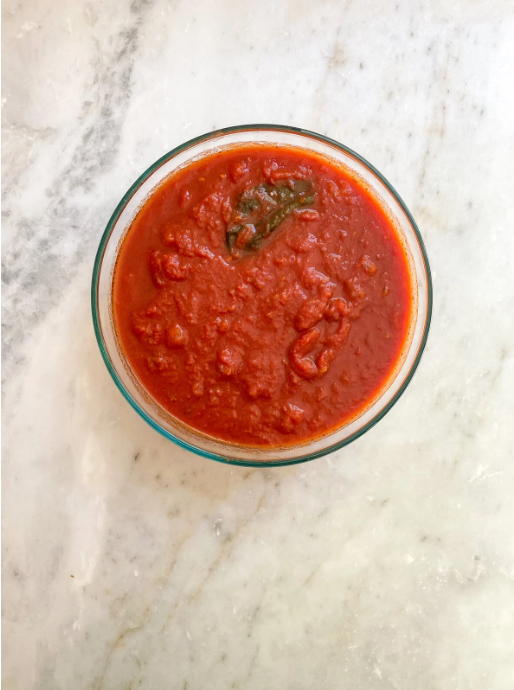
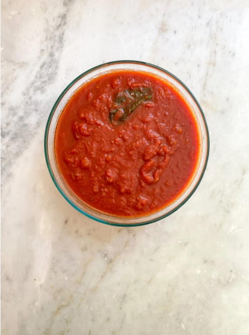

Recipe Research
Recipe link: Spinach & Ricotta Lasagna (Cucina by Elena)

Recipe link: Spinach & Ricotta Lasagna (Cucina by Elena)
Saucy sugo al pomodoro, creamy cheesy, earthy spinach, and tasty basil lasagna! A mouthful of savory and delicious goodness. This recipe highlights simple fresh ingredients as traditional Italian recipes commonly do.
 



You can freeze lasagna bolognese both uncooked and cooked, whole or in pieces. In both cases you will get an excellent result by following these tips: